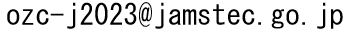
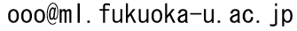

最新情報
|
活動概要
|
過去の研究会
|
メーリングリスト
|
問い合わせ
|
リンク
■ 最新情報
2024年度のオゾン研究連絡会
日時：2024年11月14日（木）（大会第3日）セッション終了後2時間程度（18:00開始予定）
場所：C会場（中会議室201）
テーマ：国際オゾンシンポジウム報告と近年のオゾン研究の動向について
日本気象学会2024年度秋季大会 大会詳細案内
■ 活動概要
オゾン研究連絡会は1990年に気象学会承認の研究連絡会として発足しました。以来、春・秋季気象学会ごとの連絡会会合を通じて活動をおこない、大気微量成分関係分野の発展に貢献してきています。2001年5月以降は第二期の幹事会、2014年9月以降は第三期の幹事会により運営され、2023年3月以降は第四期の幹事会により運営されています。オゾン層のみならず、都市から半球規模の対流圏大気化学にも重点を置きながら、関連研究者の議論や情報交換の場、気象学会におけるこの分野の研究活動の拠点となることを目指して活動を進めてきています。
■ メーリングリスト
オゾン研究連絡会では、情報交換・連絡会の案内などを目的として  というメーリングリストを運営しています。登録を希望される方は  まで連絡願います。
■ 問い合わせ
本ウェブページ・オゾン研究連絡会に関するご質問・お問い合わせ等は までお願いします。
第四期幹事会（2023.3-）
中島英彰 (代表)
国立環境研究所
笠井 康子
東京工業大学
金谷 有剛
海洋研究開発機構・地球表層物質循環研究分野
高島 久洋
福岡大学
杉田 考史
国立環境研究所
須藤 健悟
名古屋大学
山下 陽介
国立環境研究所
藤原 正智
北海道大学
■ 過去の幹事会メンバー
過去の幹事会メンバーの
リスト
です。
■ リンク
○
日本気象学会
○
気象学会の研究連絡会 (日本気象学会)